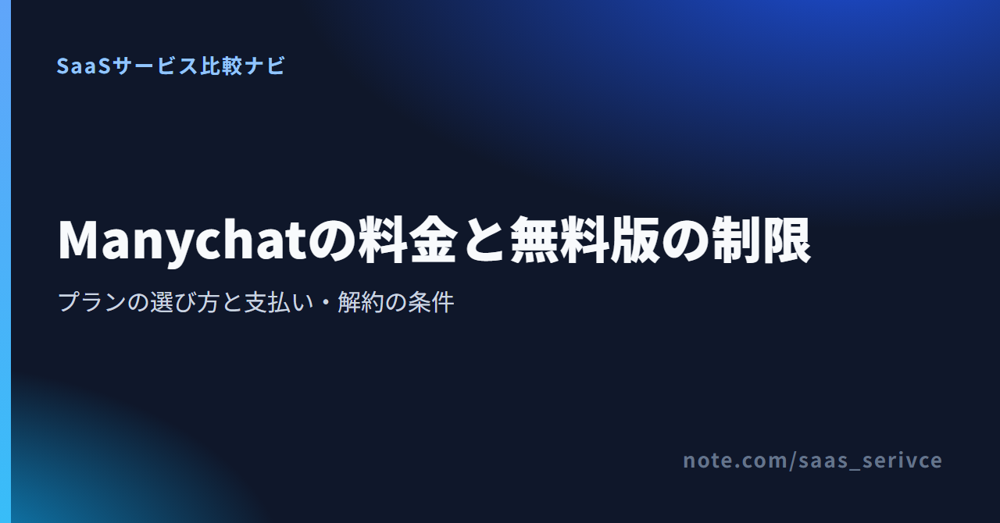
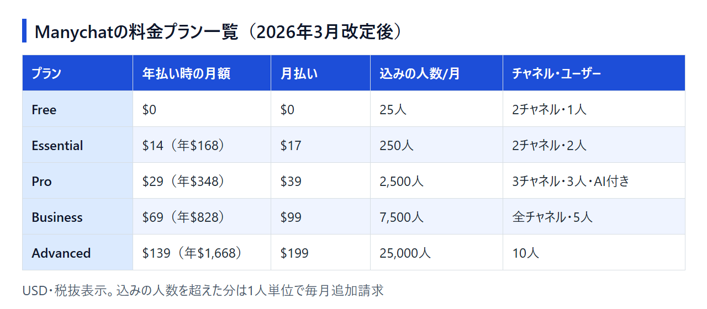

InstagramのDMに自動で返信したくてManychat（メニーチャット）の料金を調べると、記事によって書いてある金額がばらばらです。Proが月$15とするページもあれば、プランが5つあるとするページもあります。2026年3月に料金体系が変わり、新しく作るアカウントには新しい料金がかかるようになったためです。
ここでは改定後の料金を、無料の範囲から支払い・解約の条件まで整理します。自分の連絡先の数ならどのプランが合うかを判断する材料にしてください。
2026年3月以降に作ったアカウントの料金は、「その月にやり取りした人数」と「使うチャネルの数」で決まります。まずFreeプランで試し、月25人を超えそうになったらEssentialかProへ上げるのが、無駄の少ない順番です。
Freeプランは$0で、カードの登録も要りません。やり取りできる相手は月25人までですが、自動返信の動きを確かめる段階ならこの枠に収まります。
フォロワーが多く、25人の枠が数日で埋まりそうなアカウントなら、Proの14日間トライアルを使う手があります。Freeでは測れない2週間分のやり取りの人数を見てから、プランを決められます。
状況ごとの候補は次のとおりです。
料金ページは英語で、年払いと月払いを切り替えて各プランの金額を見比べられます。表示はUSDの税抜価格です。
2026年3月2日以降に作ったアカウントは、Free・Essential・Pro・Business・Advancedの5プランから選びます。有料プランにはそれぞれ料金に含まれる人数があり、それを超えた分は1人単位で毎月請求されます。
新しい料金は、アクティブコンタクトの数を基準に決まります。アクティブコンタクトとは、その月にメッセージをやり取りした相手の数のことです。登録済みの連絡先が多くても、その月にやり取りがなかった相手は数えません。キャンペーンでDMが急に増えた月は、その月の請求だけが上がります。
年払いにしたときの料金は次のとおりです。

年払いの割引率は、Essentialが18%、Proが25%、BusinessとAdvancedが30%です。月払いにした場合の月額は次のとおりです。
料金ページでアクティブコンタクトの人数を動かすと、プランごとの金額の変わり方を確かめられます。
込みの人数を超えた分は、1人あたりの単価で上乗せされます。単価は上位のプランほど下がります。
年払いで契約していても、超過分はその月ごとに請求されます。たとえばEssentialを年払いにして、ある月に300人とやり取りすると、込みの250人を超えた50人分として約$4.10がその月に加わります。
超過料金には上限額（overage threshold）を設定できます。また、同じ請求期間のうちに上位プランへ上げると、それまでに発生した超過料金は請求されません。
年払い同士で比べると、Essentialの月$14に超過分を足した額は、月430人前後でProの月$29を上回ります。やり取りする相手がそれ以上に増える見込みなら、はじめからProを選んだほうが安く収まります。
同じ計算で、Proに超過分を足した額がBusinessの月$69を上回るのは月3,550人前後、Businessに超過分を足した額がAdvancedの月$139を上回るのは月1万1,400人前後です。チャネルやユーザーの数が足りていても、やり取りの人数がこの境目を超えるなら、上のプランのほうが安くなります。
Proを月$15とする情報は、改定前の旧料金です。2026年3月2日より前に作ったアカウントには旧料金が残っていて、Proは月$15（500人まで）から連絡先の数に応じて上がります。
旧料金のアカウントは新料金への移行を待っている状態です。旧料金は、これから登録する人には当てはまりません。
Freeプランはカードなしで使えますが、やり取りできるのは月25人までです。有料プランの機能を試したいなら、EssentialかProの14日間トライアルを使います。
Freeプランでできる範囲は次のとおりです。
キーワードごとに返信を分けるなど自動化を増やすと、4つの上限にすぐ届きます。ロゴを外したい場合も有料プランが必要です。
EssentialとProには、14日間の無料トライアルがあります。Proを試せば、Manychat AIや3つ目のチャネルが自分の運用に要るかを14日のうちに見極められます。
現在の無料トライアルは14日間です。30日という期間が出てくるのは返金の規定のほうで、購入から30日以内に解約した場合が返金の対象になります。30日間無料で使えるという意味ではありません。
上位プランで増えるのは、主にチャネル数、ユーザー数、Manychat AIとAPI、メールの送信数です。Instagramだけで使うなら、チャネル数よりも、やり取りする人数でプランを選ぶことになります。
Instagramはプランに含まれるチャネルの1つで、DM自動返信だけならFreeやEssentialの2つで足ります。InstagramのDMに1通ごとの送信料はかからず、送信料がかかるのはWhatsAppのメッセージです。なお、LINEは対応チャネルに入っていません。
Manychat AIはProプランから料金に含まれます。API accessも料金表ではProの列に載っていて、BusinessとAdvancedはProの連携機能をすべて含みます。料金表にAPIの別料金は載っておらず、Pro以上のプラン料金の中で使う形です。
外部のシステムとつなぐ予定があるなら、はじめからPro以上を候補にしてください。
有人で返信するメンバーが増える場合や、メールも配信する場合は、次の上限も確かめておきます。
月額のほかに費用がかかるのは、主に込みの人数を超えたコンタクトと、WhatsAppのメッセージ送信です。WhatsAppの送信料は、Manychat Walletの残高から1通ごとに引かれます。
WhatsAppの料金区分は、Marketing（販促のテンプレート）、Utility（通知のテンプレート）、Service（問い合わせへの返信）の3つです。Serviceはテンプレートを使わない返信で、ユーザーからの問い合わせに答えるときのメッセージを指します。
日本の電話番号あての送信は「Rest of Asia Pacific」の区分で計算されます。2026年10月1日からの単価は次のとおりです。
販促のメッセージを1,000人に1回ずつ送ると、Marketingの単価で約$97です。月に何度も一斉配信するなら、プランの月額より送信料のほうが大きくなることもあります。
Walletの残高を使えるのは、メールとWhatsAppの送信料だけです。プランの月額や年額には充てられません。
予算は「プランの料金＋超過コンタクト＋WhatsAppの送信料」の合計で組んでおきます。
有料プランはクレジットカードが必須で、請求はUSD建てです。料金ページに載っているカードはVisa、Mastercard、American Express、Discoverの4ブランドで、JCBの記載はありません。
JCBのカードしか持っていない場合は、記載のある4ブランドのカードを1枚用意しておけば確実です。料金は請求先の国によって決まり、最終的な金額は購入画面に表示されます。
1ドル=157円換算（執筆時点の目安。為替で変動）で計算すると、代表的な2プランの年払いは次のくらいになります。
日本の適格請求書発行事業者の登録番号がインボイスに載るかどうかは、公開されている情報からは分かりません。消費税の扱いも含めて、経費処理の方法は税理士に確認してください。
なお、請求や契約について問い合わせるときは、日本語サポートの案内はなく、英語でのやり取りが前提です。サポートの区分は、Freeがセルフサポート、EssentialとProがメール、BusinessとAdvancedが優先サポートです。
Manychatはやり取りした人数、LステップはLINEの送信通数で料金が変わり、Chatfuelは定額です。まず使いたいチャネルで候補を絞ってから、料金を比べてください。
Lステップは、LINE公式アカウントの機能を広げる国産のツールです。InstagramやWhatsAppには対応していないため、Manychatとは使う場面が違います。
チャットと電話の日本語サポートがあり、申し込みには日本の電話番号での認証が必要です。
Chatfuelは、Manychatとよく比べられる海外のチャットボットツールです。
ManychatのProを年払いで使い、超過料金を足した額がChatfuel Businessの定価$69に並ぶのは、やり取りが月3,550人前後になったときです。それより多くの人と毎月やり取りし、超過料金が積み上がるのを避けたいなら、Chatfuelが比較の候補に入ります。
解約はWebの Settings → Billing → Cancel Subscription から自分で行い、請求期間の終わりまで有料機能を使えます。次の請求日より前に、余裕をもって手続きを済ませるのが安全です。
解約の手順は次のとおりです。
モバイルアプリからは解約できないので、スマホで運用している場合もブラウザから操作します。
解約するとPending cancellation（解約待ち）の状態になり、請求期間の最後まで有料機能を使えます。ただし、次の請求日にインボイスが発行済みだと、その月の料金は請求されます。
解約しても、コンタクトと作った自動化の中身は残ります。
年払いは割引が大きい一方で、途中で下のプランに移れません。上位プランへはいつでも上げられますが、30日の返金期間を過ぎると、下のプランへ移るには契約期間の終わりまで待つことになります。
年払いにする前に、月払いで1〜2か月使って毎月のアクティブコンタクト数を確かめておくと、込みの人数が合ったプランを選べます。月払いから年払いへはいつでも切り替えられ、月払いの残り期間の分はクレジットになります。
Freeで月ごとのやり取りの人数をつかみ、25人を超えるか、AI・APIや3つ目のチャネルが必要になった時点で有料プランを選びます。
契約の前に確かめておきたいのは、次の3点です。
Freeプランはカードを登録せずに始められます。まず自動返信を1本動かし、1か月で何人とやり取りしたかを見てから、プランを決めてください。25人の枠がすぐに埋まりそうなら、Proの14日間トライアルで2週間分の人数を見るほうが早く決まります。